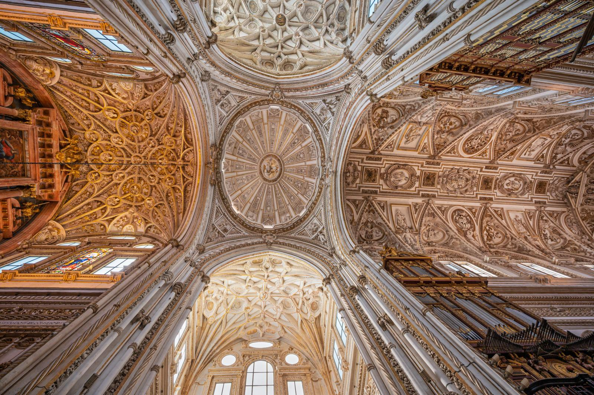
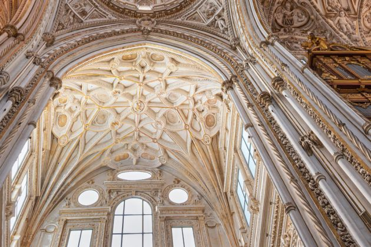
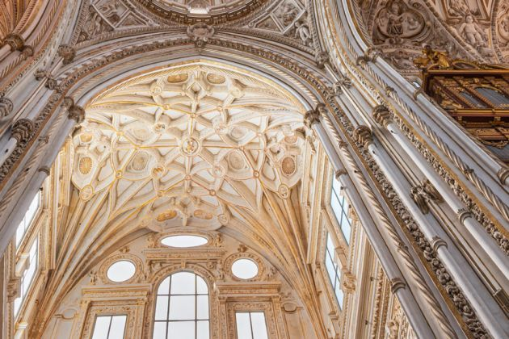

Córdoba: back to the sliders
Noemeo never saw the mask, only the exported photos. It found from the pixels what the photographer hadn’t noticed: the new Lightroom mask had turned saturation down too. Two edits later:



Compared with your previous version: closer to what you were going for.
“I’d stop here—the remaining brightness at the bottom helps explain the illumination and depth rather than competing with the dome.”
Excerpts from a real session, shared by the photographer, who made every edit. Noemeo’s replies are unedited. Enlarge a detail to flip through all four versions.
Read the whole conversation
Noemeo’s first read · Strong
Strong: coherent, engaging, and substantially resolved, with qualities that sustain attention beyond competent execution.
- What works
- The upward viewpoint turns the intersecting vaults into an enveloping architectural experience, with sweeping ribs carrying the eye toward the central dome. Warm gold on the left, pale stone through the center, and dark organ pipes on the right give the intricate ornament a readable hierarchy. Detail remains clear enough to reward exploration without losing the larger sensation of grandeur.
- What holds it back
- The bright windows along the bottom edge pull attention away from the central vault, slightly weakening its role as the visual destination. Otherwise, the main limitation is interpretive rather than technical: the photograph conveys the building’s magnificence convincingly, but offers less of a distinctive emotional perspective beyond awe at its ornament and scale.
- Leave as it is
- Keep the pronounced convergence of the columns and arches: it expresses the sensation of looking overhead and makes the architecture feel enveloping.
- Keep the contrast between the warmer left-hand vault and the cooler central stonework, which separates the architectural spaces and prevents the ornament from becoming visually uniform.
- Edits to try
- Gently reduce the brightness of the bottom-edge windows and their immediate surrounds to keep attention circulating around the central dome; this would slightly reduce the sense of daylight flooding the interior, so avoid making the windows gray.
New version
Reduced bottom brightness. Is it better, or is it too much?
Compared with the version you started with: further from what you were going for.
The reduction is clearly present, and the current version handles the bright bottom windows better: they no longer pull as insistently from the central dome, so the tonal change itself moves the image closer to the assessment’s concern. It is not too dark in a clipping or blocked-shadow sense.
But the adjustment reaches too far beyond brightness. The lower central vault is about 15 L* darker, substantially cooler, and less saturated, turning the original warm continuation into a grey, relatively detached section. That weakens the warm-left/cool-center relationship and the sense of light carrying through the architecture. The extra local contrast near the bottom also makes that area busier, while the section immediately above has become slightly softer.
I’d keep some reduction at the windows, but restore much of the warmth and brightness in the surrounding vault. In short: the aim helped; the present mask is too broad and too chromatically heavy.
New version
Is it better? The previous mask accidentally severely reduced saturation. I restored saturation and confined the mask area to the windows and made it softer
Compared with your previous version: further from what you were going for.
Your correction is visible: saturation and warmth have returned around the lower vault, and the transition is softer. Compared with the immediately previous version, though, it goes a little too far—the mask now brightens and warms much of the lower-centre vault, not only the windows. That golden patch competes more with the central dome and feels less integrated with the cooler stone around it.
Against the original, it is still better overall: the bottom windows exert less pull, while the architecture retains more colour than in the desaturated intermediate version. So the restoration fixed the main accident, but I’d split the difference: keep the restored saturation, and reduce the mask’s warmth and brightness over the vault while preserving the stronger reduction directly on the window panes.
New version
Do you like it more? I slightly raised the temperature of the mask
Compared with your previous version: closer to what you were going for.
Yes—more than the previous version. The slight temperature increase restores a natural golden continuity in the lower vault, so it no longer feels grey or detached, while the windows remain sufficiently restrained. The warmer area is noticeable, but it now relates to the warmth on the left rather than reading as an isolated colour patch.
It also improves on the original overall: the lower windows pull less strongly, and the central dome remains the clearer destination. There has been no troublesome global colour drift; the change is concentrated low in the frame. I’d stop here—the remaining brightness at the bottom helps explain the illumination and depth rather than competing with the dome.
Every turn up to the final edit, unedited, without the step-by-step Lightroom suggestions Noemeo attached to two replies.